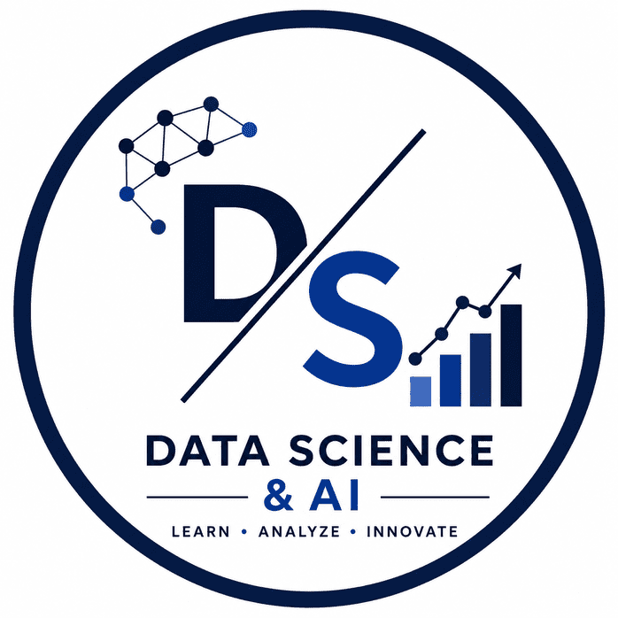

Emerson University Multan
I am a BS Data Science student with a strong interest in Artificial Intelligence, Machine Learning, Data Analytics, and Business Intelligence. I enjoy transforming raw data into meaningful insights and building data-driven solutions that solve real-world problems. My academic experience includes Data Warehousing, Business Intelligence, Dashboard Development, Predictive Analytics, and Machine Learning projects that strengthen both my analytical and technical capabilities.
Developed an interactive Tableau dashboard as part of a Data Warehouse and Business Intelligence project. The dashboard analyzes heart disease data, visualizes patient trends, risk factors, and health indicators, enabling data-driven healthcare insights and decision-making.
Currently working on a machine learning-based bioinformatics project focused on RNA sequence analysis. The project involves sequence preprocessing, feature extraction, pattern discovery, and predictive modeling techniques to identify meaningful biological insights and improve analytical accuracy.
Completed Artificial Intelligence training under NAVTTC. Learned Machine Learning, Data Preprocessing, Data Visualization, AI Concepts, Model Building and practical AI applications.
Learned Data Analysis, Statistics, Data Cleaning, Exploratory Data Analysis (EDA), Predictive Analytics, Dashboard Development and Business Intelligence concepts.
Studied Python fundamentals including variables, loops, functions, file handling, object-oriented programming, NumPy, Pandas and Data Science applications.